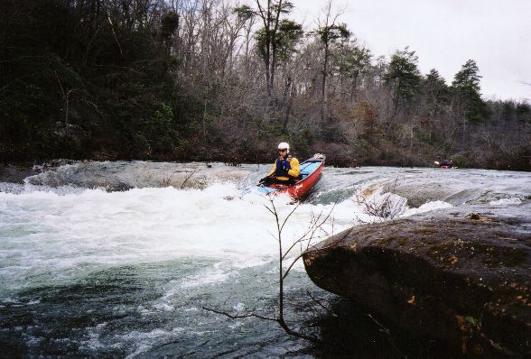
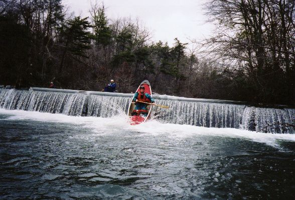
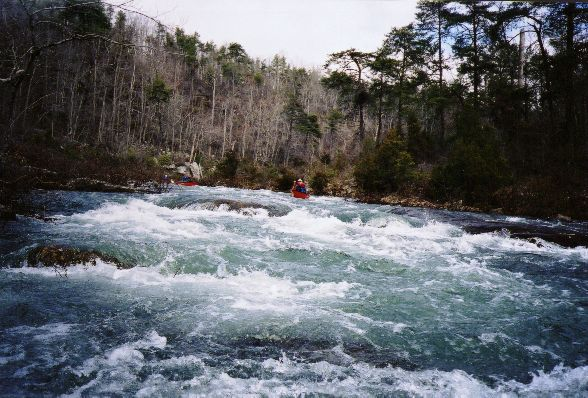
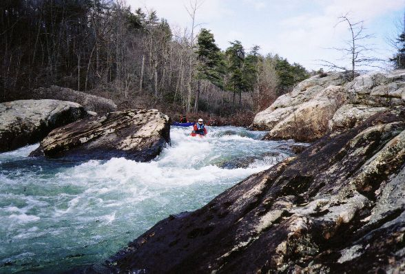

|
The East Fork put-in is just below the Lake Lahusage Dam (Murray Carroll Photo) |
|  | Dale Culpepper runs a small drop early in the run |
|  | Dave Curry eschews the walk around the 'not so treacherous at this level' low head dam. |
|  | Brenda Barnett heads into a rapid somewhere on the East Fork |
|  | Brenda runs the left side of one of the III- rapids. You could go right of the rock as well. |
|
(Murray Carroll Photo) |